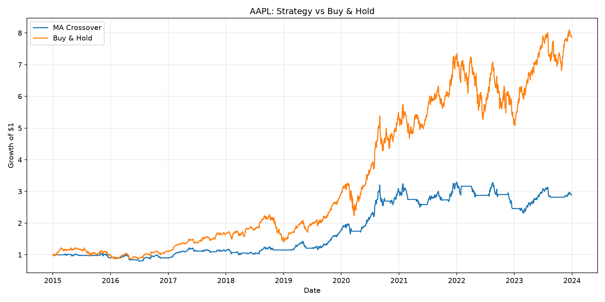
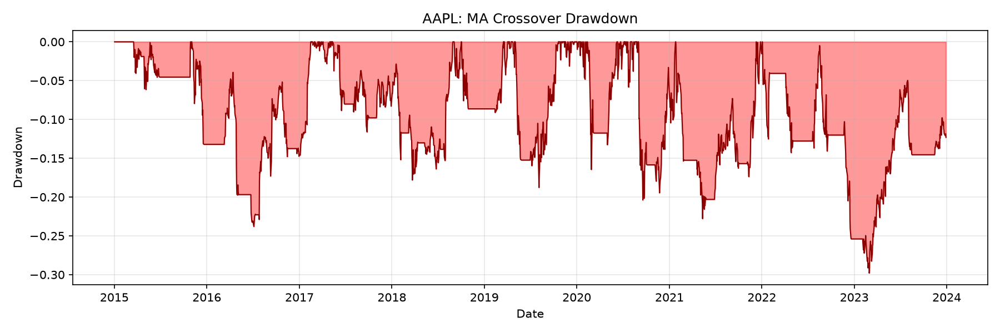

A Python engine for backtesting trading strategies on daily stock data for SPY, AAPL, MSFT, NVDA, and AMD from 2015 to 2023. Strategies are plug-in classes, currently a moving-average crossover and a Bollinger-band mean reversion. Trades execute the day after each signal to avoid lookahead bias, and every trade pays a 0.1% transaction cost. Each run reports total return, Sharpe ratio, max drawdown, and win rate against buy-and-hold.
To check for overfitting, it grid-searches moving-average windows on in-sample data and re-tests the best parameters out of sample, and runs a rolling walk-forward optimization with 3-year training and 6-month test windows. It also breaks results down by market regime, from the 2020 COVID crash to the 2022 rate-hike selloff. Neither strategy beat buy-and-hold on total return, but the crossover cut maximum drawdown on SPY and AAPL.

